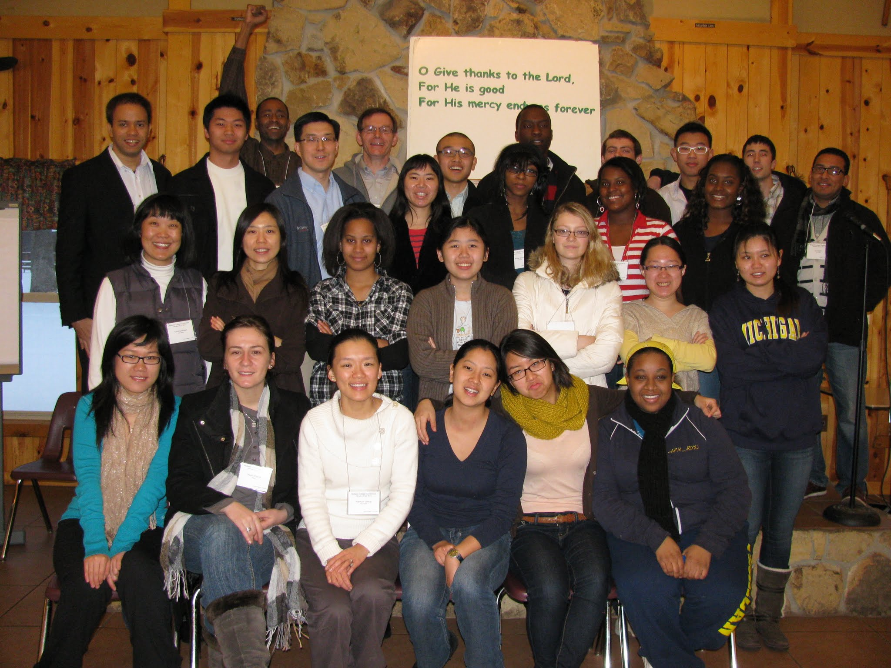

"That their hearts may be comforted, they being knit together in love and unto all the riches of the full assurance of understanding, unto the full knowledge of the mystery of God, Christ" (COL. 2:2)
Who we are
Christians on Campus at the University of Michigan is a campus group comprising believers in Christ from various backgrounds. We love the Lord Jesus and endeavor to give Him the first place in all things (Col. 1:18).
We feel that it is vital to have Christian companions throughout our college years to build, preserve, and strengthen our faith. With so much going on around campus, it is hard to give even a minute of our time to the Lord. What we want to do together is to recover the focus of our human life, which is to enjoy God and His presence! How sweet it is to be able to pursue and experience this loving God (Phil. 1:14)!
All students are invited to join us in pursuing the truth hidden within the depths of the Bible. No matter what kind of background you come from, whether Christian, Atheist, or any other belief, we welcome you to come see what we are all about.
Our goal
Our goal is not to become a big Christian organization. We care only for students to experience the joy that comes from pursuing this living God.
